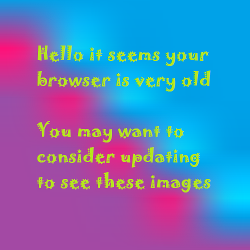

This week we looked at the start up of our vms and how they can be used to host a simple http web page. Along with this I was introduced to the linux command line which luckily I have seen before. This first involved making a web folder via
mkdir web, connecting to this folder via cd web. From here I created a html file through the nano command and hosting it to be accessed by the vm IP address / personal domain of up896692.myvm.port.ac.uk.
You can also use the ls command to list all the files in that directory and to return back to your student id folder you simply type cd and *enter*.
Week 02 - Web security
This week we looked into different types of information that us as users generate on a day to day basis. This then had to be subdivided into different severities of data and how they would be considered to be secret, private or public.
Further
on from this we discussed how this would be captured from people and how this either would be on a legal or illegal basis. A brief list of attacks could range from:
Literature review research was the main focus of this week. This weeks google document provided a way in which we can gather articles and papers relating to the literature review title. This is then going to be broken down into useful papers
and papers that are unrelated to the topic. Further creating notes and referencing to them. Themes will be created from these and a ‘synthesized precis’ will be the overall outcome of this literature review, therefore giving a ‘state of the
art’ review of Mitigating personal information exposure on the web.
Week 04 - Academic Writing
During this practical session I have looked into academic writing that has helped with improving word structure within sentences. This is important as it can help me to cut down on word count as well as having correct sentences within my
literature review. For instance through replacing phrasal verbs with cues it reduces your word count so it gives a clearer point that you are trying to get across in a reduced about of words. A big part of this was that a literature review
should avoid personal opinion, as well as this referencing was to be done in the APA format (sixth edition).
Week 05 - Introduction to Markup
During this practical the task was to start off by setting up the virtual machine to be opened in WinSCP which I knew about from previous experience with
websites. From here I created a simple profile page via the in text editor that could display a single
paragraph as so.
<!DOCTYPE html>
<html lang="en" dir="ltr">
<head>
<meta charset="utf-8">
<title>Profile</title>
</head>
<body>
<p>Hello this is my profile page!</p>
</body>
</html>
I then linked this to a home page that allows the profile page to be navigated to, this was the origins of the index page where you can access all my other pages within the folder. The google doc pointed to further reading on the Mozilla Developer Network where an extensive website of HTML5 resources are available for you to
get access to. In this instance <!DOCTYPE html> shows that the document type is in HTML5.
Week 06 - Consolidation Week
Website was worked on.
Week 07 - HTML/CSS
Having a CSS file in place of style attributes helps in multiple ways, firstly the maintenance of the page is reduced significantly due to the style being placed within a style sheet and so allows you to edit multiple elements with the same
styles all at once. File sizes are reduced meaning faster loading times on user interaction. This week was the basics of linking a stylesheet to a HTML document. As shown:
Within this code snippet the first h1 and second p both have the same CSS styling which for instance could be the same colour or different font-family's. This shows how using the <style> tag within the head or anywhere else on the HTML document was only to slow down the process of the page loading. Therefore with this you could cut code down from:
Editors are important in the efficiency in your coding of your web page, with different packages within editors it makes it very easy to quickly markup a document. By cutting out default methods, adding multiple cursors, themes, a live preview and beautifying it makes it much more sense to use. Further on in this practical I marked up this discovery log to be easily uploaded to the website when I switch over to my own CSS rather than the use of bootstrap. A range of editors that have received good reviews are:
When connecting to the virtual machine you use a SSH login via the plugin provided in week 01, this is useful for navigating around the linux command line yet when you want to add your own HTML files from your local machine this isn’t so useful. Therefore to do this you use WinSCP which is a form of SFTP. This allows you to transfer files from your local pc to the virtual machine. From the command line you can then run http-server within the directory of your files to see them go live on the vm’s IP.
During this session I learnt that having lots of information is hard to scale down into groups. This inevitably helps users to navigate around your web page and so having well grouped categories can make this easier and less stressful for your users. By not committing to this you run the risk of other competitors from taking your traffic due to their site having a better way of presenting the information to your users. Within this practical our group was instructed to sort 42 cards into categories that we thought best suited them. This was our result:

From here it helps me to develop upon a website that is clear to the user and down to the point at the beginning so there is no confusion.
Week 10 - Using Images
Images require the use of a <img> tag to be displayed within a web page. This has data within it that specify the source with the src and describe what the image is with the alt attributes. An example of this would be:
<img src="img/example.png" alt="An example img tag">
Another way in displaying an image on a web page is to use the <picture> element which allows you to put multiple sources to support many different types of browsers or to support slower devices. You can still use the alt attribute to describe the image yet when you map out the image into html you use a <source> element instead of src. Within using this <source> element you can determine what image quality to display depending on the quality of the screen that is loading the image. An example of this is:
<picture>
<source srcset="img/source1.png" alt="source image 1">
<source srcset="img/source2.jpg" alt="source image 2">
<img src="img/fallback.png" alt="fall back image if picture source tag images don’t show">
</picture>
On my web page I have mostly used the picture tag as that is the most up to date HTML5 element for displaying images.
Week 11 - 12 Christmas Break
Website was worked on
Week 13 - Addressing the Web
Anchor tags are important when you want to link a external site to your page. This is when you see a link on your page, click it and it pops open the destination url. The simple use of <a> is what does this. By using the href attribute the anchor tag is complete and ready to use. Other types of attributes you can use within the anchor element are alt for a link description, title for a tool tip prompt when hovering over the link and a target which allows for the link to be opened in a fresh tab or browser rather than detering the user from your web page.
Week 14 - Website Marking Scheme
During this week it was key for everyone to know what the web page specifications were and what each page was expected to meet for either high or low end grading. This meant that through the use of W3C validator the page should not throw any errors when tested, this site allows for the developer to see exactly where the error is thrown down to the line that it is on and what file it is in. Along with this it is important that the web pages are in HTML5 as that is the most up to date recommendation suggested by W3C, this is to make sure that old traits are not being carried forward into future times.
Week 15 - Web Standards
The original web was a very confusing place with random web pages scattered around to their own IPs or domains, there was no common search engine and HTML was basic. As the internet developed so did website standards, for instance you have multiple browsers that some could display a certain web page whereas others couldn’t. With standards it makes users time a lot easier since a web page is made to work in all browsers and handle multiple requests that before it couldn’t. HTML5 has improved standards by giving content within a web page more meaning when being read in the source, examples of this are body, article, section, nav, aside, header and footer.
Week 16 - Usability
If a user is left frustrated with a web page then it is likely that they will not return to that page unless they have to. With usability it is the idea of making web pages user friendly and accustom to make their use of the site as easy as possible with either clearly laid out content or visual comfort. A good example of this is if a website is usable on desktop and mobile, as the web has grown mobiles have too. It is now the norm for a user to be viewing a site from their mobile browser rather than their desktop. Therefore with the use of the @media CSS selector developers can incorporate sites to be scaled accordingly to the screen size. An example of this would be:
/* CSS FILE
This determines what layout of grid is set, the first body is used on the
mobile view as the media tag only initiates when the browser is 40em wide.
(This is my site CSS)
*/
body {
display: grid;
padding: 0;
grid-gap: 2rem;
grid-template: "nav" "header " "main" "headcont" "content" "jump" "footer" auto / auto;
margin: auto;
height: 100vh;
word-break: break-word;
}
@media (min-width: 40em) {
body {
display: grid;
grid-template:
"nav nav nav" auto
"header header headcont" 1fr
"main main content" auto
"jump jump ." 1fr
"footer footer footer" auto
/ 1fr 1fr 1fr;
grid-gap: 0.5rem;
height: 100vh;
}
By removing factors that may impair the sites performance you are automatically improving the page and the amount of traffic that will use it. It is not how the developer wants the site to perform and run but ultimately to be designed and tailored for the users ease.
Week 17 - Accessibility
This week consisted of using visually impairing items and a way in which to physically impair my use of websites. Tunnel vision was used to show how some users can only see pinpoints of a site due to their restricting vision, retinal impairment was to simulate the distance a user had to be from the screen in order to see the text at different angles. There are 4 criterias that should be thought about when taking accessibility into consideration.
These are:
Perceivable - Through the use of text alternatives people who are impaired in sight or speech are not incapable of using the site due to their impairment.
Operable - By making your website keyboard friendly, navigation friendly and removing designs that is known to cause seizures, users will have a much better experience.
Understandable - Making content readable, appearance and operational predictable will improve a users experience. This helps users to avoid mistakes.
Robust - Having your site compatible with current and future technologies allows for expansion and introduction of assistive technology.
Author: UP896692
Glossary
HTML: Hypertext Markup Language (HTML) is the standard markup language for creating web pages and web applications.
CSS: Cascading Style Sheets (CSS) is a style sheet language used for describing the presentation of a document written in a markup language like HTML
IP: Internet Protocol (IP) address is a numerical label assigned to each device connected to a computer network that uses the Internet Protocol for communication.
SFTP: Secure File Transfer (SFTP) is a robust file transfer protocol based on SSH that provides file transfers between hosts on a network. Like a remote file management protocol, SFTP allows for a range of operations on remote files (viewing directories, deleting files and directories, etc.).
SSH: Secure Shell (SSH) is a cryptographic network protocol for operating network services securely over an unsecured network. Typical applications include remote command-line login and remote command execution, but any network service can be secured with SSH.
URL: Uniform Resource Locator (URL) is used to specify addresses on the World Wide Web and is the fundamental network identification for any resource connected to the web (e.g., hypertext pages, images, and sound files). The protocol specifies how information from the link is transferred.